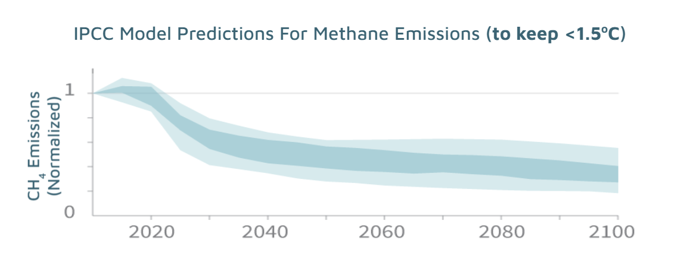

Methane Tracker
Detection of landfills using satellite images
MethaneTracker
While Carbon dioxide is well known to be a leading cause of global warming, one-sixth of global greenhouse emissions are caused by Methane (CH4). Also, Methane is 30 times more potent than CO2 in warming the atmosphere and Methane emissions need to be reduced by 45% by 2030. In the United States, landfills are estimated to contibute 17% to CH4 emissions and are the third largest contributor, after energy and agriculture. The figure below shows the amount of reduction in methane required to keep the temperature rise to less than 1.5 degrees C.
As a first step in this direction, we need to identify all the landfills in a given geographical region. This helps with identifying illegal dumpsites. The sense in which the landfills are illegal could range from being unauthorized, emitting more Methane than allowed, landfill area larger than originally authorized etc. We propose a two-stage approach: In stage 1, we calculate a probability for whether or not a given image contains a landfill. In stage 2, we draw a bounding box around the landfill. In conjunction with other emissions data, this model can be used to provide accurate estimates of Methane emission from a given landfill.
Methodology
MethaneTracker is trained on approximately 2,500 satellite images of landfills obtained from Copernicus Sentinel-2 using Google Earth Engine (~2000 in the US and ~500 in other countries). We utilize deep learning methods for automated detection of whether or not an image contains a landfill and drawing a bounding box around the landfill if the image contains a landfill. Our approach provides an efficient and scalable method for detecting landfills and will be useful to any agency or regulatory body looking to identify landfills and the amount of Methane emitted by them.
Data
We searched for existing sources of labeled landfill datasets and were unable to find any labeled datasets. We spent a couple of weeks and built our own dataset for the classification and segmentation tasks. For classification training, we obtained the latitude and longitude co-ordinates of ~2000 landfills in the United States and ~500 landfills in the rest of the world. The images were obtained using the google earth engine API. We assumed that if the latitude and longitude co-ordinates we offset by a value of 0.4, we would not have a landfill in the image that is generated from the new set of co-ordinates and generated 4x the number of images in the positive class. (positive class - images with landfills, negative class - images with no landfills). For semantic segmentation, we used the makesense.ai platform to annotate landfills in images and generate segmentation masks.
The image zoom level is set at abc with image sizes of Z x Z pixels.


Model Architecture
MethaneTracker deploys a two-stage model using an image classification model to identify the landfill images, which are then passed to a semantic segmentation model for mask prediction. For the classification model, we utilize transfer learning and fine-tuned Inception-V3. This convolutional neural network classifies each satellite image tile into the landfill or no-landfill class. Those images that are identified as landfill with probability greater than a threshld value are passed through the semantic segmentation model, which is a YOLO-v5 model. For a given image, this model draws a bounding box around the landfill in the image.

Performance
The performance of our model is evaluated on a validation dataset of z1 landfill and z2 no-landfill images. For the classification model, we use the performance metrics of accuracy, precision, recall, and F-1 score. For the semantic segmentation model, we use the performance metrics of mAP (mean average precision).


Team
We are a team of data scientists at University of California Berkeley and this project is part of our synthetic capstone class. We believe that this work will contribute to identify landfills and provide good estimates of methane emissions from these landfills and help landfill operators and regulatory agencies with policy compliance.

Prakhar Maini

Brian Ament

Sonya Chen

Michael Zhu